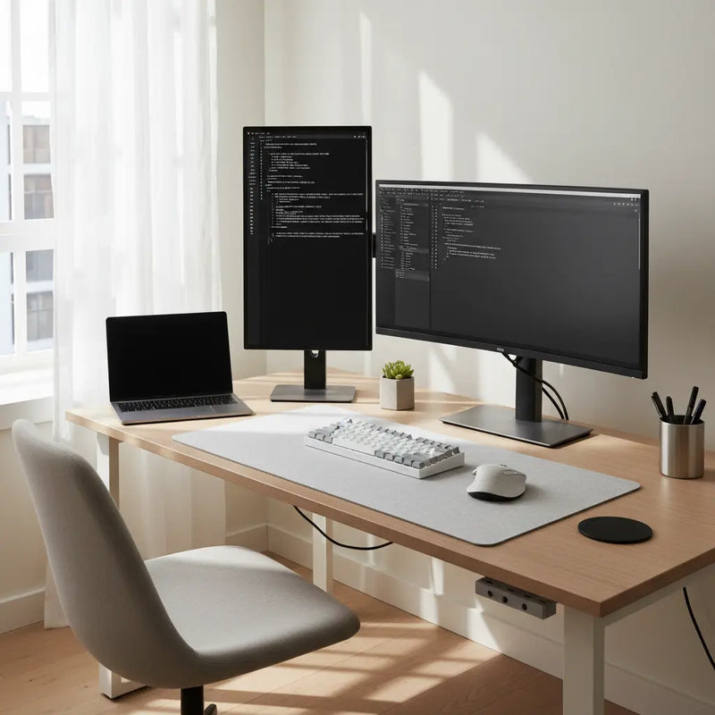

L'informatica non è per me una semplice materia di studio, ma una vera e propria passione che assorbe tutto il mio tempo. È la scienza che si occupa di come rappresentare, organizzare e gestire le informazioni in modo del tutto automatico. Il termine nasce in Francia nel 1962 dall'unione delle parole information e automatique. Pur essendo una disciplina autonoma, il suo cammino si intreccia da sempre con quello del computer: ogni passo avanti della tecnologia alimenta e rinnova questo mio interesse in modo continuo.

Clicca qui per andare nella pagina di cìo che faccio